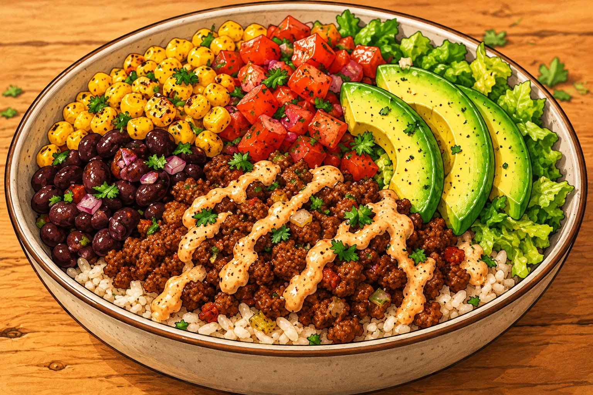

Burrito bowl au bœuf
Une grosse portion maison, simple à préparer, avec des légumes et des protéines.
⏱ 25 min🍽 1 grosse portion💰 ≈ 4–6 €💪 ≈ 52 g protéines≈ 850 kcal
Ingrédients
- 180 g de bœuf haché 5 %
- 90 g de riz cru
- 100 g de haricots rouges cuits
- 80 g de maïs
- 100 g de tomate
- 70 g de salade
- 50 g d’oignon
- 30 g de yaourt nature
- 5 ml d’huile
- Paprika, cumin, citron vert
Préparation
- Cuire le riz dans une casserole.
- Faire revenir l’oignon puis le bœuf avec huile, paprika et cumin 7 à 9 min en émiettant la viande.
- Réchauffer les haricots et le maïs dans la poêle.
- Déposer riz, viande, maïs, haricots, tomate et salade dans un grand bol.
- Ajouter yaourt et filet de citron vert.
Conservation et réchauffage
À conserver 2 jours au réfrigérateur sans la salade ni la sauce ; réchauffer la partie chaude séparément.
Nutrition et prix indicatifs : à recalculer selon les marques et quantités dans MyFitnessPal. Les sauces mentionnées sont sans poisson : vérifier les étiquettes.